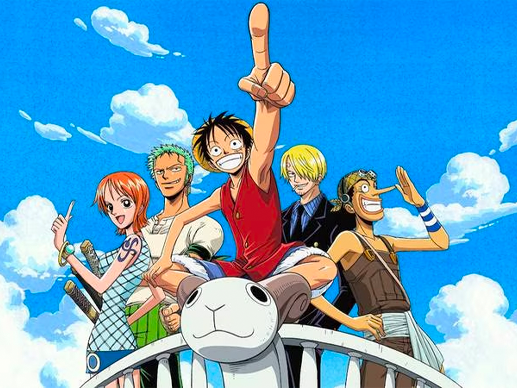
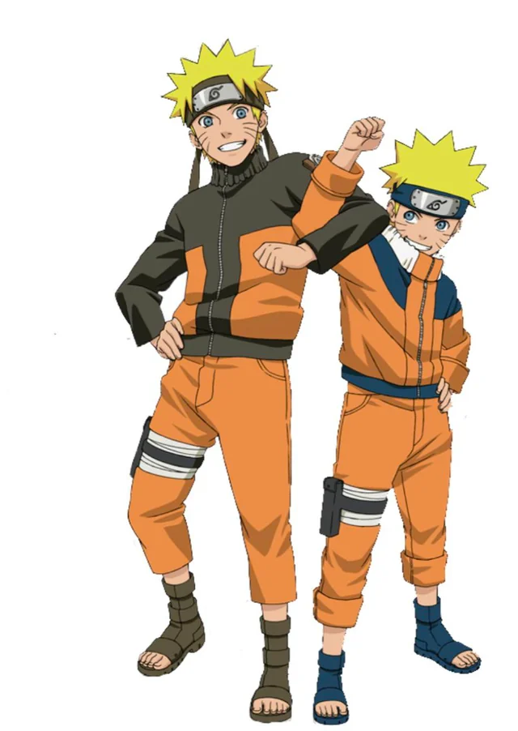
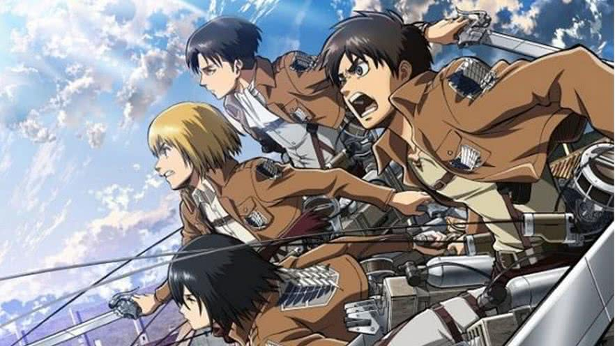

O que é anime? e porque é um tipo de arte
O termo "anime" se refere a animações japonesas, que se destacam por seus estilos visuais únicos, técnicas de animação diversas e narrativas profundas e diversificadas, abrangendo uma ampla gama de gêneros e temas

Personagens classicos de animes famosos

Anime DragonBall
O estilo de arte dos animes, conhecido como anime, é caracterizado por olhos grandes e expressivos, cores vibrantes e personagens com designs distintos. Além disso, o anime utiliza enquadramentos e técnicas de animação que diferem dos desenhos animados ocidentais. A diversidade de gêneros e estilos dentro do anime permite uma ampla gama de expressões artísticas.
Recomendações de Animes
1. One Piece (1999 - Até os dia de hoje)

One piece é sem sombra de duvidas um dos maiores animes ja feitos, maior tanto em popularidade, e também numero de episódios. One Piece tem atualmente 1112 episódios. Além disso, a série conta com 5 OVAs, 13 especiais de TV e 15 filmes. Se você tem espirito de explorador e não tem medo de encarar um desafio, One piece é pra você, O protagonista Monkey D. Luffy sonha em ser o Rei dos Piratas e para isso tem que reunir bons companheiros e enfrentar monstros dos mares.
2.Dragon Ball Z (1989 - 1996)

Dragon Ball Z é a continuação de Dragon Ball, onde temos nosso protagonista Goku, um guerreiro da lendaria raça sayajin, agora adulto e com u filho chamado gohan, enquanto protege o planeta terra.
3.Naruto(2002 - 2007) e Naruto Shippuden(2007 - 2017)

Naruto : Naruto Uzumaki é um garoto órfão que tem a raposa de nove caudas selada dentro dele, todo mundo o despreza, pois essa raposa trouxe muita destruição no passado, mas ao inves de ele usar isso como algo ruim, ele usa como motivação para se tornar um grande nija e ser o Hokage de sua Aldeia
Naruto Shippuden : Continua a história aproximadamente 2,5 anos depois. Naruto retorna mais maduro após treinar com Jiraiya. Agora seu objetivo é resgatar Sasuke, lidar com a perigosa organização Akatsuki e defender a vila de ameaças globais
4.Attack on Titan (2013 - 2023)

Attack on Titan se passa em um mundo dominado pelo medo,lá fora onde há gigantes comedores de humanos. O que é conhecido são so três muralhas que os protegem dos gigantes, O protagonista, Eren sonha em se tornar membro da tropa de exploração, para conquistar sua liberdade.
5.Demon Slayer (2019 - Até hoje)

Tanjiro Kamado volta para sua casa e encontra sua família morta por um demônio, sua irmã Nezuko ainda esta viva, mas ela se tranformou em um demônio, mas ainda sim ela ainda tem sentimentos e Tanjiro parte em sua jornada de caçador de demônios para transforma-la de volta em humana.